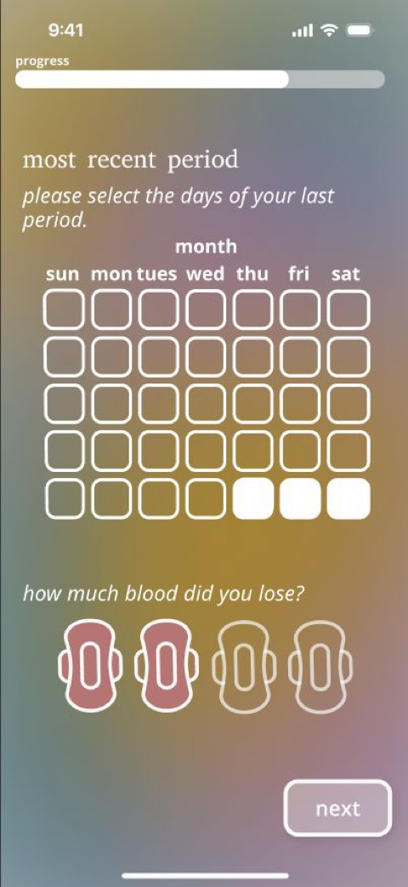
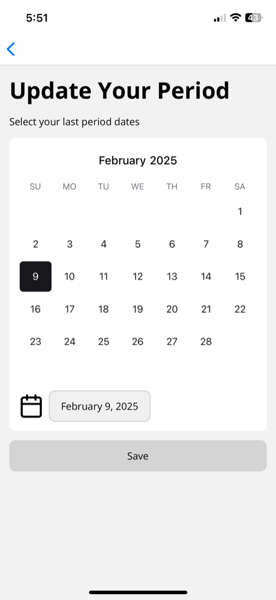
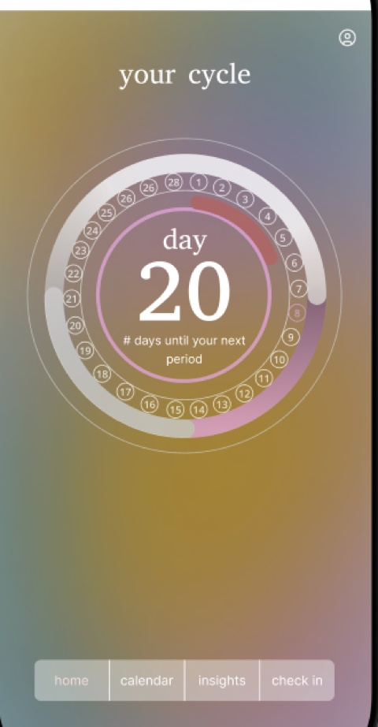
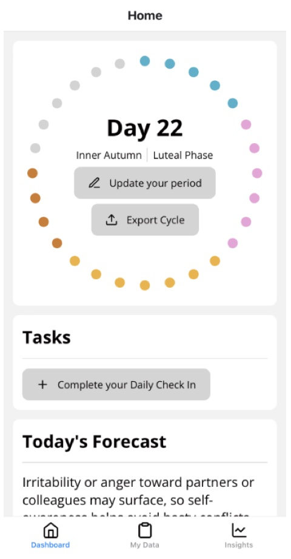
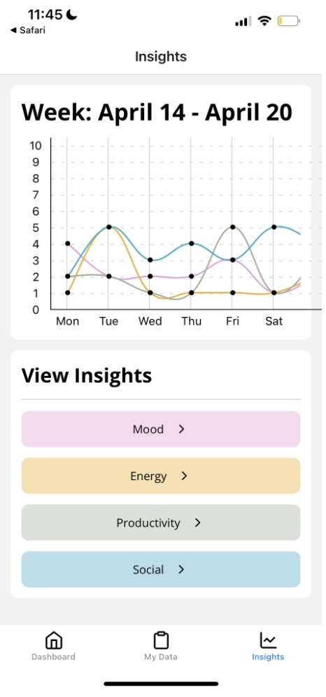
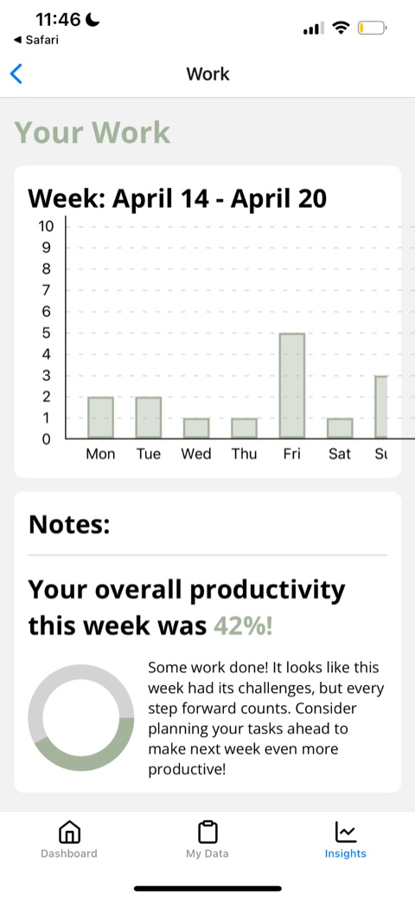

28ISH
@MEERADAVEwomen's health deserves more than a tracking app
PRODUCT LEAD & ENGINEER · TEAM OF 5 · REAL STARTUP CLIENT
THE BRIEF //
A two-semester engagement with a real startup founder. Her mission: a world where women feel confident and in control of their bodies. Existing trackers stop at data entry — users log everything and learn nothing. 28ish exists because closing that gap is both a product opportunity and a health equity problem.
DISCOVERY //
Anonymous survey over interviews — 60+ responses pinned our target user (women 18–34, North America) and top pain points: complexity, lack of personalized insights, and privacy concerns.
DEFINING THE MVP //
Three MVP pillars: cycle tracking, symptom logging, personalized insights. Scoped a PostgreSQL schema and 5-sprint plan. Cut smartwatch biometrics; deferred AI advising. Every sprint had to demo to a real founder.
WHAT I OWNED //
Shipped the insights experience end-to-end on React Native/Expo + FastAPI + PostgreSQL — routing, graph library integration, weekly mood/energy/productivity charts wired to live data. Ran peer code reviews and negotiated API contracts so design iterations didn't break data integrity.
artifacts & iterations...
01 · LIVE DEMO
02 · CYCLE TRACKING


03 · HOME / DASHBOARD


04 · INSIGHTS


ITERATION //
Validated Figma high-fis in Expo Go usability sessions. Period logging needed native calendar affordances; daily check-in needed separate behavioral vs. menstrual form paths; symptom data only became useful with drill-down insight categories and color-coded weekly charts.